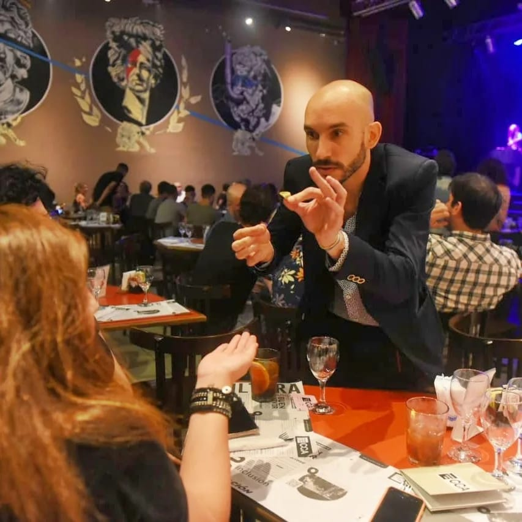
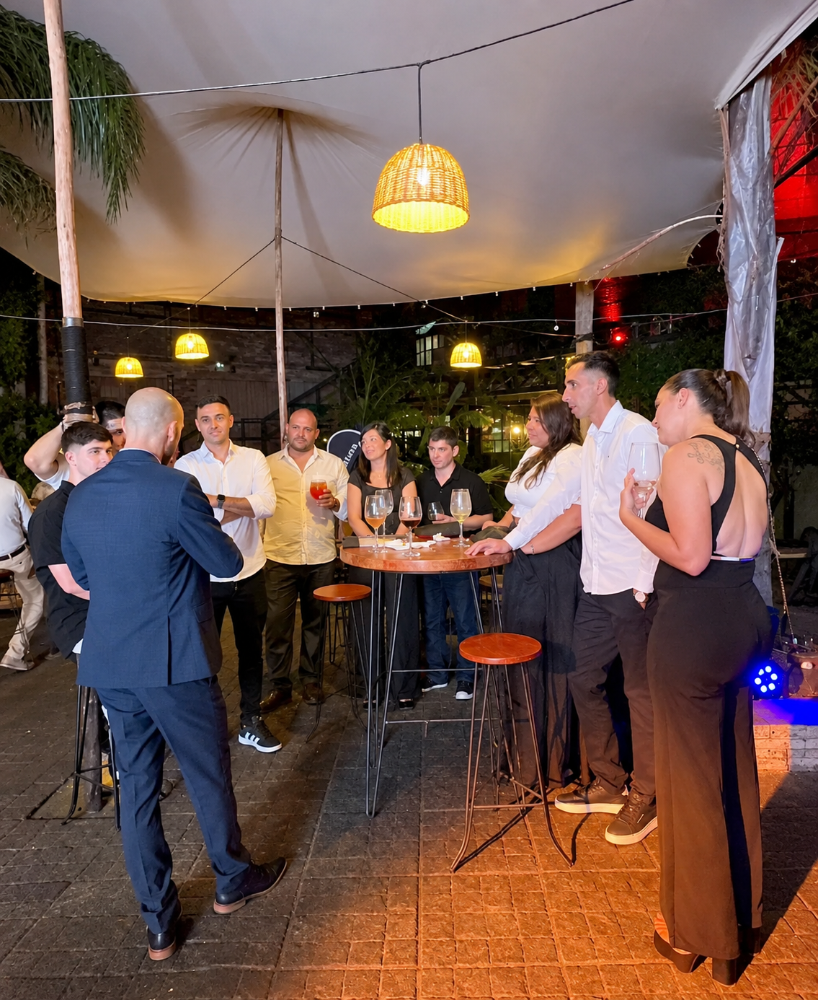

Magia que sucede a centímetros de los espectadores.
Una propuesta de magia, ilusionismo y mentalismo pensada para compartir directamente con los invitados.
Mati se acerca a los grupos durante la recepción, el cóctel, una celebración o entre las mesas para presentar diferentes experiencias de magia y mentalismo.
No se trata de reunir a todos los invitados alrededor de un escenario. La magia aparece dentro del propio evento, formando pequeños momentos de participación e interacción que se adaptan naturalmente a cada grupo.
Cada encuentro es diferente: cartas, objetos cotidianos, pensamiento, decisiones, coincidencias y situaciones en las que los propios espectadores se convierten en parte de lo que sucede.

La propuesta está pensada para acompañar el ritmo de cada celebración sin alterar su dinámica.
Durante una recepción, por ejemplo, los grupos pueden ir disfrutando de diferentes efectos mientras esperan el comienzo de la actividad principal. En otros eventos, la magia puede desarrollarse entre las mesas o durante distintos momentos de la reunión.
La duración y la modalidad se pueden adaptar al espacio, la cantidad de invitados y las características de cada evento.
Magia durante la llegada de los invitados, mientras se encuentran y comienza el evento.
Recorrido por diferentes mesas o grupos, adaptando cada intervención al momento.
Los espectadores no solamente observan: participan directamente en los efectos.
El formato puede ajustarse al espacio, cantidad de invitados y dinámica del evento.

La magia close-up puede incorporarse a distintos formatos de celebración, tanto en eventos sociales como en encuentros privados y propuestas empresariales.
Contame qué estás organizando, dónde será y cuántos invitados habrá. Podemos encontrar el formato que mejor se adapte a la ocasión.
Consultar disponibilidad